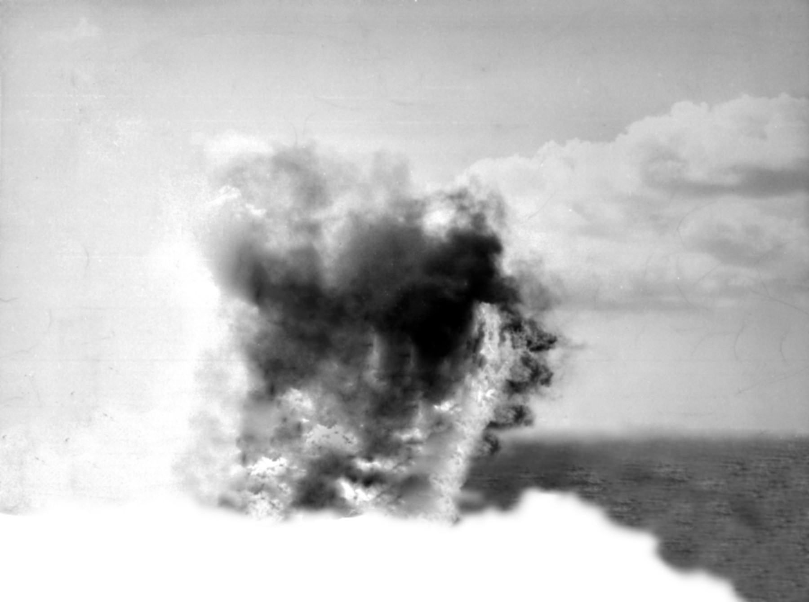
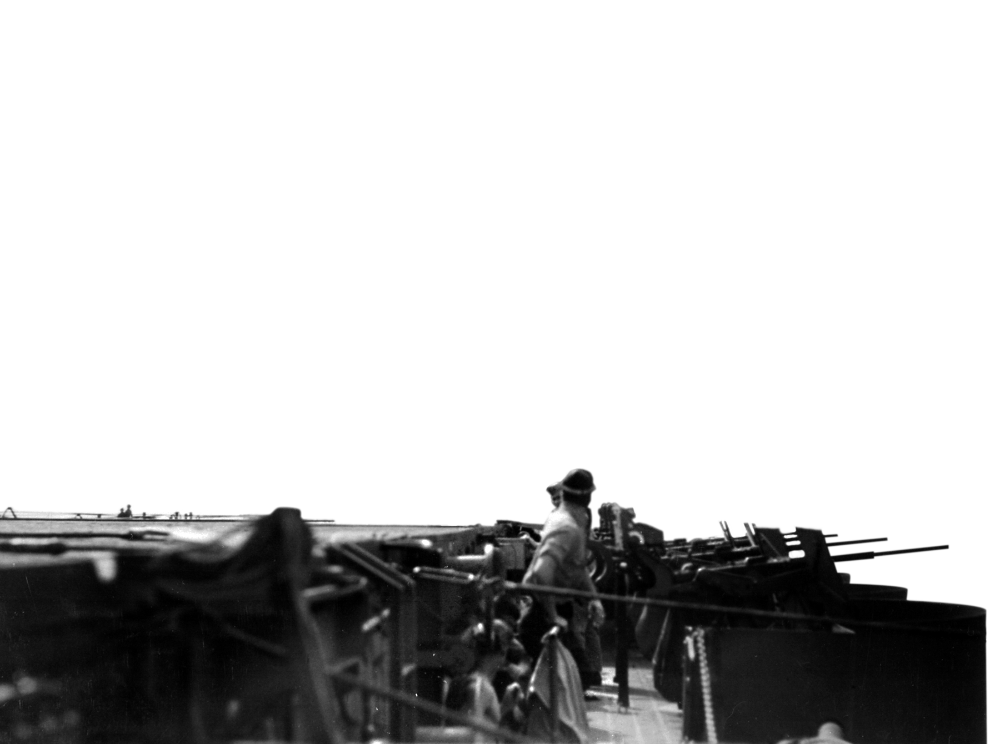
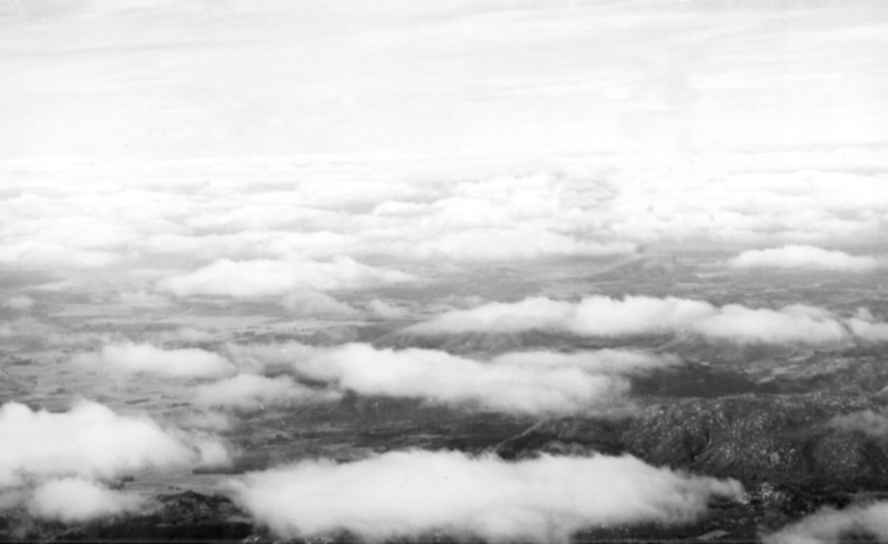
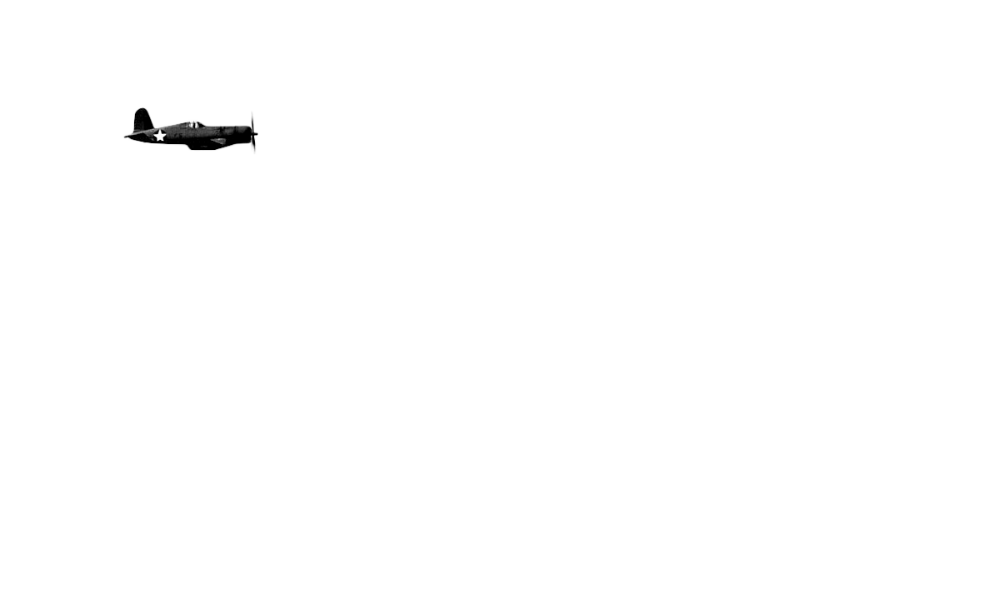
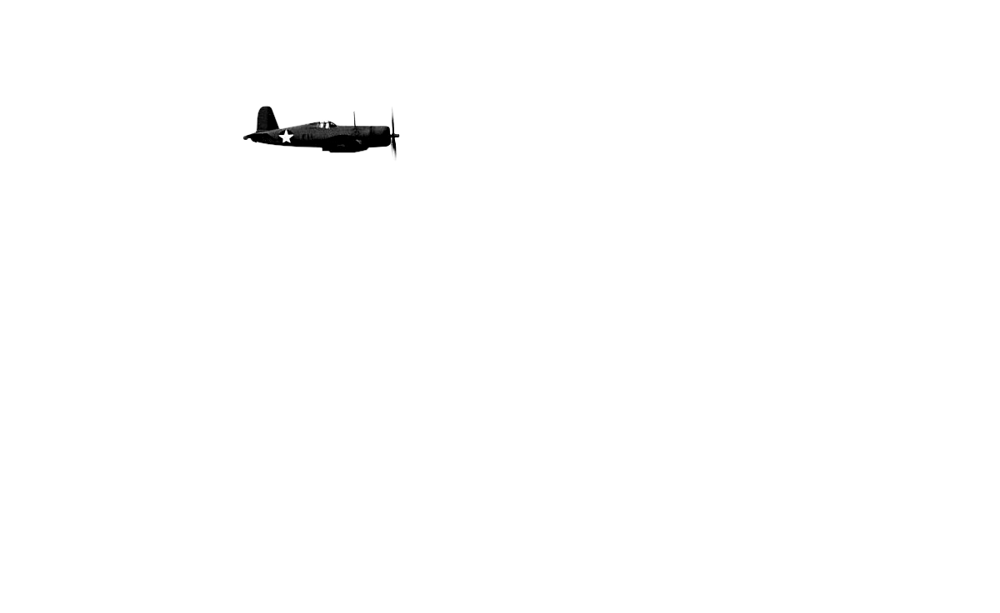
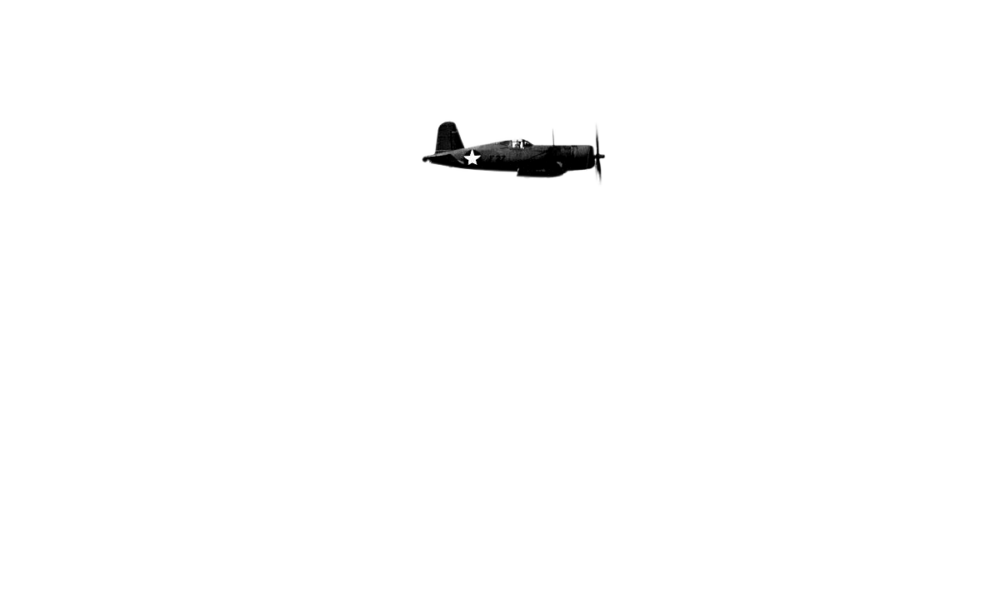
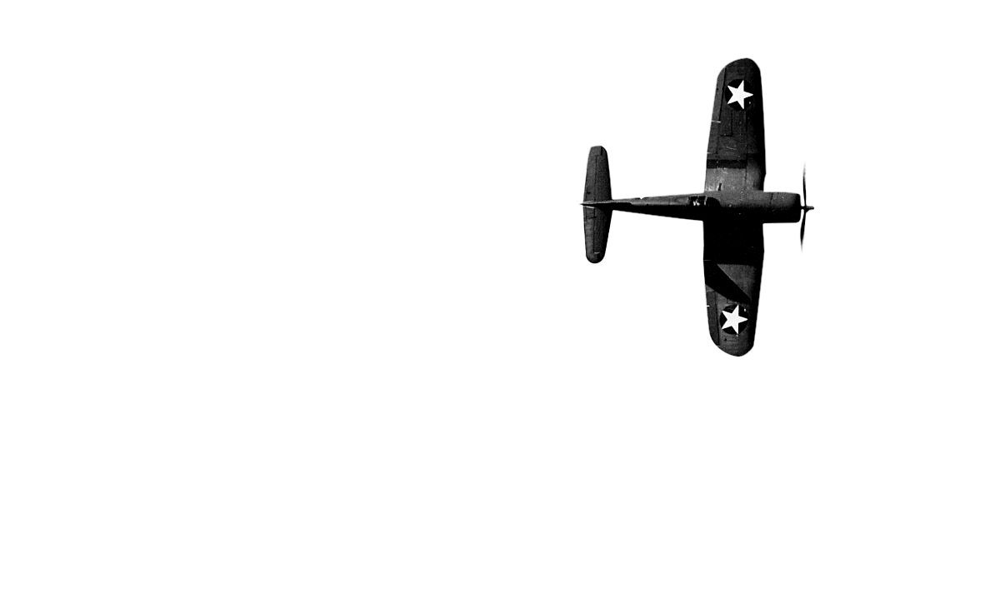

- 
- F6F HELLCAT
- 
CRASH LANDING
An F6F-3 Hellcat of the VFA-2 Squadron crash landing on the deck of the USS Enterprise on November 10th, 1943 likely near the Gilbert Islands in the Pacific.
Wikipedia
- 
- 
- F4U CORSAIR
PRACTICE
A group of F4U Corsairs on a training flight during the spring of 1943 likely over the United States.
Source- 
- 
- 